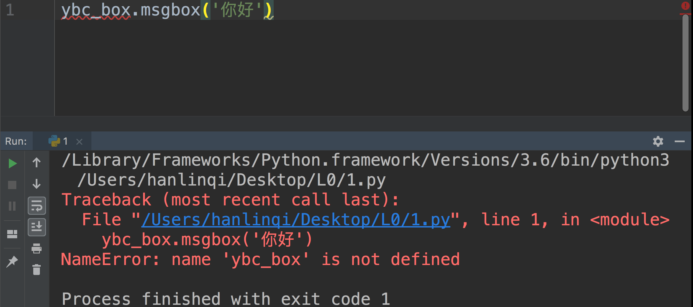

2.1. 模块
2.1.1. 没有导入模块直接使用模块
代码示例：

定位问题： （ 详情 ）
第1行： 没有导入ybc_box模块。
2.1.2. 模块名写错或者模块没有安装
代码示例：

定位问题： （ 详情 ）
第1行： ybcbox模块名称写错或者没有安装此模块。
2.1.3. 方法不存在错误
代码示例：

定位问题： （ 详情 ）
第2行： 方法名拼写错误或者不存在这个方法。
2.1.4. 模块别名
代码示例：

定位问题： （ 详情 ）
第2行： ybc_speech模块起了别名，就只能通过起的别名speech调用属性。
2.1.5. 模块方法调用图片，图片名错误
代码示例：

第3行： ybc_box模块第二个参数，图片格式拼写错误。